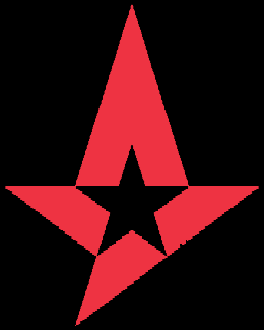
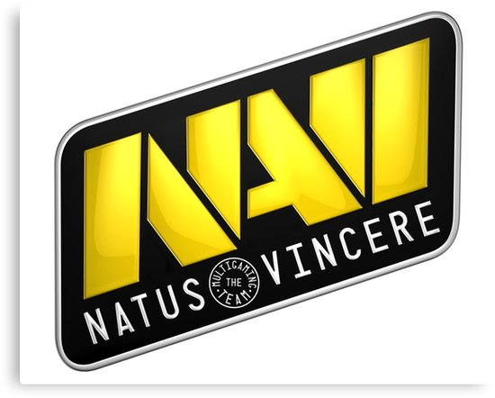

Innafor Counter Strike: Global Offensive så er det mange ulike proffesjonelle lag. Astralis og Natus Vincere er dei lagene eg kjem til å snakke om.
Astralis er eit dansk e-sport lag som kom på fyrsteplass i Faceit Major 2018 i London og vant 500 000$. Dei er for øyeblikket verdens beste Counter Strike:Globla Offensive lag.
 Til venstre ser du logoen til Natus Vincere, også kalla NaVi. Til høgre så ser du logoen til Astralis.